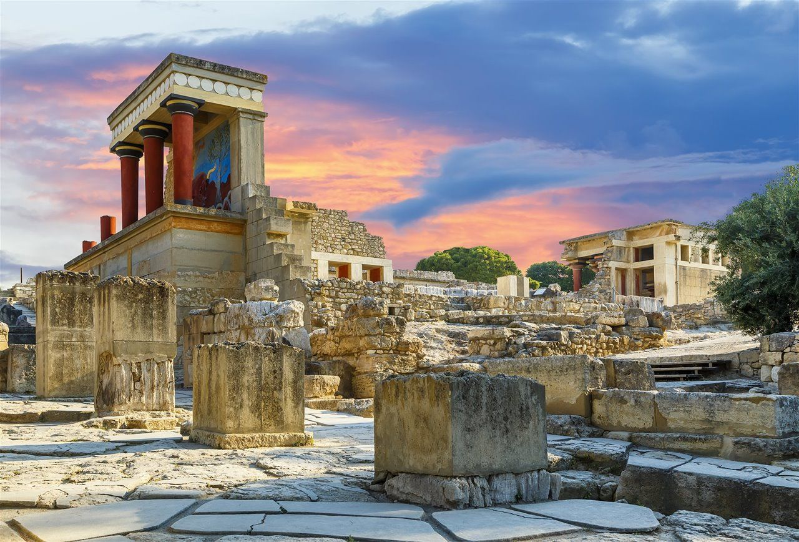
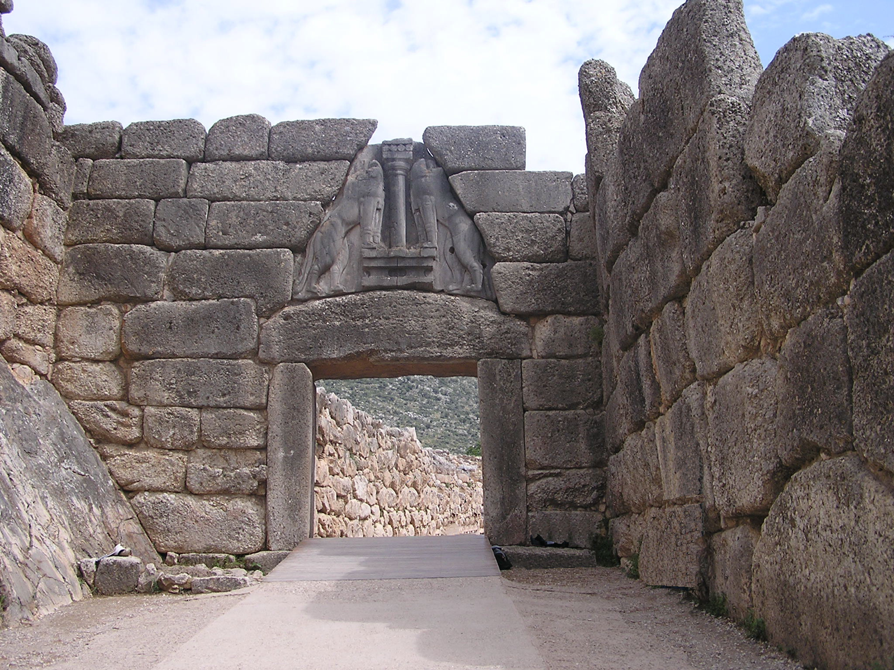
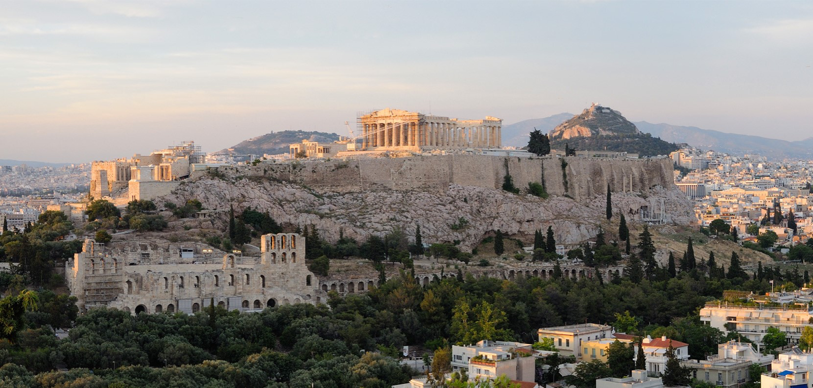
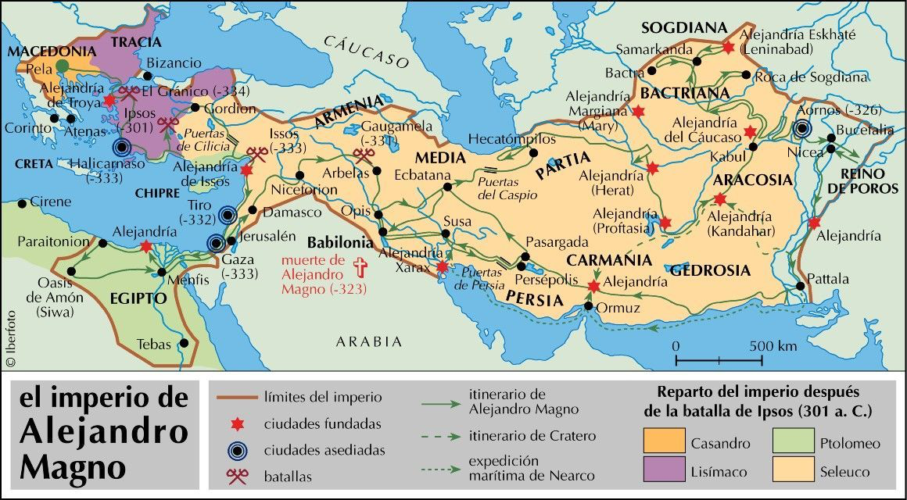

Teoría UD2 · Historia: de Grecia a Roma¶
Obxectivos da unidade
- Comprender as etapas fundamentais da historia grega (minoica/micénica, arcaica, clásica e helenística).
- Identificar as fases da historia romana (monarquía, república e imperio) e os seus fitos esenciais.
- Situar nunha liña do tempo dez acontecementos clave.
- Explicar a influencia da cultura grega sobre Roma e a construción dun espazo mediterráneo común.
1. Grecia¶
A civilización grega desenvolveuse nun espazo fragmentado en pequenas polis (cidades-estado). Cada polis tiña o seu territorio, as súas institucións e a súa divindade protectora. Grecia non foi nunca un Estado unificado, senón unha constelación de comunidades independentes. A expansión polo Mediterráneo mediante a colonización (séculos VIII–VI a.n.e.) permitiu estender a cultura grega a moitas rexións, desde Asia Menor ata a Magna Grecia en Italia.
A cultura grega marcou para sempre a política, a arte e o pensamento de Europa.
1.1 Etapas históricas (visión xeral)¶
A historia grega pódese dividir en seis grandes períodos.
Mapa interactivo · Polis e colonización (placeholder)
1.2 Do mundo palacial á polis¶
 
- Civilización minoica (Creta):
- Desenvolveuse na illa de Creta entre os anos 2000–1400 a.n.e.
- Organizábase arredor de grandes palacios (Cnosos, Festos, Malia), que eran á vez centros políticos, económicos e relixiosos.
- Destacan os frescos policromos con escenas naturais e mariñas, que mostran unha sociedade refinada e aberta ao mar.
- Utilizaban a escritura lineal A, aínda non descifrada.
- A súa economía baseábase no comercio marítimo, polo que Creta converteuse nunha potencia naval do Exeo.
- Relixión de carácter naturalista e feminino: cultos á deusa nai, ao touro (mito do Minotauro).

- Cultura micénica (continente):
- Desenvolveuse no continente grego (1600–1100 a.n.e.), en cidades como Micenas, Tirinto ou Pilos.
- Tiña unha sociedade xerárquica e guerreira, dirixida por reis (wanax) apoiados por unha aristocracia militar.
- Construíron cidadelas fortificadas e tumbas monumentais (tholos, como a “tumba de Atreo”).
- Desenvolveron unha escritura propia, o lineal B, que xa foi descifrada e que representa unha forma arcaica do grego.
- A súa cultura militar reflíctese nos poemas homéricos (Ilíada, Odisea), que transmiten ecos dun pasado heroico.

- Tras a Idade Escura (1100–800 a.n.e.):
- Con as invasións dóricas e a caída do mundo micénico produciuse un retroceso demográfico, económico e cultural: desapareceu a escritura, reduciuse o comercio e as aldeas quedaron illadas.
- A partir do século VIII a.n.e. houbo unha recuperación:
- Reaparece a escritura mediante a adaptación do alfabeto fenicio, que deu lugar ao grego.
- Fórmanse as polis, comunidades políticas independentes cun núcleo urbano e un territorio agrícola arredor.
- Nace un novo sistema social baseado na cidadanía, na participación política (aínda limitada a homes libres) e no concepto de comunidade.
Institucións e sociedade
-
A polis:
- Era a comunidade política fundamental en Grecia.
- Combinaba un espazo urbano (asty) cun espazo rural (chora).
- Os cidadáns homes libres participaban na asemblea e elixían ou ocupaban as maxistraturas.
- Había tamén non-cidadáns: mulleres, metecos (estranxeiros residentes) e escravos.
-
Economía:
- Agricultura da tríade mediterránea (trigo, vide, oliveira).
- Artesanía especializada (cerámica, metalurxia, tecidos).
- Comercio marítimo, facilitado pola xeografía grega de illas e costas recortadas.
-
Colonización (s. VIII–VI a.n.e.):
- As polis, ante o aumento de poboación e a escaseza de terras, fundaron novas cidades ao longo do Mediterráneo e Mar Negro.
- Creáronse polis na costa de Asia Menor, no sur de Italia e Sicilia (Magna Grecia), en Galia, Exipto ou Cirene (Libia).
- A colonización permitiu difundir a lingua, a relixión e as formas políticas gregas, creando un espazo cultural común.
Vídeo: A polis grega en 5' (placeholder)
1.3 O período clásico: Atenas, Esparta e as guerras¶

O chamado período clásico (séculos V–IV a.n.e.) é a etapa de maior esplendor da civilización grega e o momento en que se consolidan moitas das bases políticas, artísticas e intelectuais que influíron na cultura europea posterior.
As Guerras Médicas (490–479 a.n.e.)¶
Durante o século V a.n.e., o Imperio Persa intentou someter as polis gregas. A resistencia foi liderada principalmente por Atenas e Esparta:
- En Maratón (490 a.n.e.), os atenienses derrotaron sorprendentemente ao exército persa.
- En Termópilas (480 a.n.e.), un pequeno grupo de espartanos, encabezados polo rei Leónidas, resistiu heroicamente fronte a un inimigo inmensamente superior.
- En Salamina (480 a.n.e.), a frota ateniense obtivo unha vitoria naval decisiva.
Estas batallas convertéronse en símbolos da identidade grega e da defensa da liberdade fronte á tiranía.
O esplendor de Atenas¶
Logo das Guerras Médicas, Atenas asumiu a hexemonía mediante a Liga de Delos, unha alianza militar que se converteu nun auténtico imperio mariñeiro.
Baixo o liderado de Pericles (mediados do século V a.n.e.):
- Consolidouse a democracia ateniense, cunha participación cidadá directa nas asembleas.
- Viviu un gran esplendor cultural, con autores como Esquilo, Sófocles e Eurípides no teatro, Heródoto e Tucídides na historiografía, Sócrates na filosofía.
- A Acrópole foi monumentalizada con edificios como o Partenón, símbolo da arte clásica e da confianza no ser humano.
Atenas converteuse así no faro cultural de Grecia, aínda que a súa hexemonía xerou recelos noutras polis.
A Guerra do Peloponeso (431–404 a.n.e.)¶
A rivalidade entre Atenas (potencia naval, democrática e imperialista) e Esparta (potencia terrestre, de carácter militarista e oligárquico) desembocou nun longo conflito que dividiu ás polis en dous bandos: a Liga de Delos e a Liga do Peloponeso.
A guerra prolongouse case tres décadas, con fases de tregua e reanudacións, epidemias como a que matou a Pericles, e intervencións exteriores (Persia apoiou finalmente a Esparta).
O resultado foi a derrota de Atenas no 404 a.n.e. e a breve hexemonía espartana. Con todo, o desgaste xeral debilitou ás polis gregas, facilitando a súa posterior conquista por Macedonia.
Balance do período clásico¶
O período clásico grego combina:
- Esplendor cultural e político, que deu lugar á democracia, a filosofía e as grandes obras de arte.
- Conflitos internos, que minaron a unidade helénica e deixaron Grecia vulnerable.
É unha etapa brillante e contraditoria: ao tempo que se formulaban os principios da liberdade cidadá, as guerras fratricidas impedían a consolidación dunha unidade política duradeira.
1.4 O mundo helenístico¶

O chamado mundo helenístico abrangue o período que vai da morte de Alexandre Magno (323 a.n.e.) ata a conquista romana de Exipto (31 a.n.e.), cando Grecia e o Oriente mediterráneo pasan a formar parte do poder romano.
É unha etapa de transición: Grecia deixa de ser un conxunto de polis independentes e convértese no corazón cultural dun mundo moito máis amplo, no que a lingua e as ideas gregas se mesturan con tradicións orientais.
De Grecia a Macedonia¶
Despois das guerras entre polis, Macedonia, un reino do norte grego, impúxose baixo Filipo II, que unificou militarmente Grecia tras a batalla de Queronea (338 a.n.e.).
O seu fillo, Alexandre Magno (356–323 a.n.e.), educado por Aristóteles, levou esa unidade máis alá: emprendeu unha conquista sen precedentes que cambiou para sempre o mapa político e cultural do mundo antigo.
Alexandre Magno e o seu imperio¶
- Entre 334 e 323 a.n.e., Alexandre conquistou:
- Asia Menor,
- Exipto (onde fundou Alexandría),
- Mesopotamia e Persia,
- chegando ata o val do Indo.
O seu obxectivo non era só militar: quería fusionar Oriente e Occidente nun único imperio.
Por iso promoveu matrimonios mixtos, adoptou costumes persas e fundou decenas de cidades chamadas Alexandría, que serviron de núcleos de comercio e cultura.
Morreu prematuramente en Babilonia (323 a.n.e.), sen sucesor claro: o seu enorme imperio fragmentouse axiña.
Os reinos helenísticos¶
Despois da súa morte, os seus xenerais —os diádocos— repartíronse o territorio, creando varios reinos independentes, pero todos de lingua e cultura gregas.
Os máis importantes foron:
- Reino ptolemaico de Exipto → dinastía dos Ptolomeos, que fixeron de Alexandría un centro intelectual de primeira orde coa súa famosa biblioteca e o Museo.
- Reino seléucida → abarcaba Siria, Mesopotamia e parte de Persia, con cidades gregas fundadas sobre antigas capitais orientais.
- Reino antigónida → en Macedonia e Grecia, mantivo a tradición política helénica e controlou as polis do Exeo.
Estes reinos conservaron o grego como lingua oficial, fomentaron o comercio e o intercambio cultural, e impulsaron a ciencia e as artes baixo o mecenado dos reis.
A mestizaxe cultural¶
O termo helenístico vén de “helenizar”: estender o grego (ἑλληνικόν) máis alá de Grecia.
A cultura grega fundiuse coas tradicións orientais, dando lugar a un mundo cosmopolita e urbano.
As principais características foron:
- A lingua koiné, unha forma común do grego, converteuse na lingua internacional do Mediterráneo oriental.
- As novas cidades (Alexandría, Antioquía, Pérgamo, etc.) foron centros de comercio, ciencia e arte.
- O contacto entre pobos deu lugar a unha visión máis aberta e universal do ser humano.
A cultura helenística¶
| Campo | Avances e figuras destacadas |
|---|---|
| 🎨 Arte |
|
| 🔬 Ciencia |
|
| 💭 Filosofía |
|
O final do mundo helenístico¶
Durante os séculos III e II a.n.e., os reinos helenísticos debilitáronse por loitas internas e pola crecente influencia de Roma, que foi conquistando progresivamente o Mediterráneo oriental:
- Macedonia converteuse en provincia romana en 148 a.n.e.
- Grecia foi sometida definitivamente tras a destrución de Corinto (146 a.n.e.).
- Asia Menor e o reino seléucida foron anexados no século II a.n.e.
- Finalmente, Exipto foi incorporado por Roma en 31 a.n.e., tras a derrota de Cleopatra e Marco Antonio en Accio.
Con esa data remata o mundo helenístico e comeza a etapa romana, na que o helenismo pasará a formar parte esencial da cultura imperial.
O helenismo non significou o fin da cultura grega, senón a súa universalización:
Roma herdará e transmitirá esa herdanza, convertendo a Grecia na profesora do mundo antigo.
2. Roma¶
A historia de Roma abrangue máis dun milenio e pode dividirse en tres grandes etapas: monarquía, república e imperio.
A cidade, que comezou como un pequeno asentamento nas marxes do Tíber, chegou a dominar todo o Mediterráneo e a converterse nunha das civilizacións máis influentes da historia.
2.1 Etapas históricas (visión xeral)¶
Fundación lendaria e influencias etruscas.
Institucións colexiadas, expansión e Guerras Púnicas.
Principado, Pax Romana, crise e caída de Occidente.
Monarquía (753–509 a.n.e.)¶
Segundo a tradición, Roma foi fundada por Rómulo no 753 a.n.e., á beira do río Tíber, sobre o monte Palatino.
Durante esta etapa gobernaron sete reis, entre eles Rómulo, Numa Pompilio, Servio Tulio e Tarquinio o Soberbio. Os últimos monarcas eran etruscos, e achegaron coñecementos técnicos, relixiosos e urbanísticos.
O poder político estaba concentrado no rei, asistido polo Senado (consello de anciáns) e pola asemblea popular.
Nesta época establecéronse as bases da sociedade romana:
- Patricios: aristocracia fundadora, con dereitos políticos plenos.
- Plebeos: maioría da poboación, sen participación inicial no goberno.
- Clientes e escravos, con escasa ou nula liberdade xurídica.
A organización relixiosa e o calendario festivo tiñan unha grande influencia etrusca.
A monarquía terminou coa expulsión de Tarquinio o Soberbio e o establecemento da República.

República (509–27 a.n.e.)¶
A República naceu coa idea de evitar o poder absoluto dun único gobernante.
O sistema baseábase na colexialidade (compartir o poder) e na rotación anual dos cargos.
Institucións principais¶
- Senado → corpo permanente de antigos maxistrados que asesoraban e controlaban as decisións políticas.
- Cónsules → dous dirixentes con autoridade militar e executiva.
- Pretores → encargados da xustiza.
- Censores → controlaban o censo e a moral pública.
- Tribunos da plebe → defensores dos dereitos do pobo fronte aos abusos da aristocracia.
Sociedade e conflitos internos¶
Durante os primeiros séculos da República, a loita entre patricios e plebeos levou a reformas progresivas: creación das leis das XII Táboas (s. V a.n.e.), acceso da plebe ás maxistraturas e integración política dos cidadáns non aristócratas.
Roma consolidouse como unha república de propietarios libres, con forte disciplina militar e valores de virtude cívica (mos maiorum).
Expansión mediterránea¶
Roma pasou de controlar o Lacio a dominar toda Italia e, despois, o Mediterráneo occidental.
As etapas principais foron:
- Guerras samnitas → conquista de Italia central (s. IV–III a.n.e.).
- Guerras Púnicas contra Cartago (264–146 a.n.e.) → vitoria romana e destrución da rival africana.
- Conquista de Grecia, Asia Menor, Hispania e Exipto, integrando o mundo helenístico.
A expansión xerou riqueza e tamén desigualdade: o influxo de escravos e botíns transformou a sociedade rural e provocou conflitos sociais.
Crise da República¶
A concentración de poder en xenerais como Mario, Sila, Pompeio e César levou a sucesivas guerras civís.
En 46 a.n.e., Xulio César foi nomeado ditador vitalicio, e tras o seu asasinato, Octavio Augusto conseguiu o control absoluto do Estado, poñendo fin á República.
Expansión romana¶

Imperio (27 a.n.e.–476 e.c.)¶
Con Augusto (27 a.n.e.–14 e.c.) comeza o Imperio, e concretamente a fase do Principado, na que o emperador concentraba o poder baixo a aparencia das antigas institucións republicanas.
O Principado e a Pax Romana¶
Durante dous séculos, o Imperio gozou dunha longa Pax Romana, caracterizada pola estabilidade, o crecemento económico e unha ampla rede de cidades, estradas e acuedutos.
As provincias integráronse mediante a romanización, que difundiu o dereito, a lingua latina e o modo de vida romano.
Baixo os emperadores da dinastía xulio-claudia (Tiberio, Calígula, Claudio e Nerón) e dos Antoninos (Traxano, Adriano, Marco Aurelio), o Imperio alcanzou a súa máxima extensión e esplendor.
Crise e reformas¶
No século III e.c., o Imperio entrou en crise:
- Inseguridade nas fronteiras (invasións xermánicas e persas).
- Depreciación da moeda e caída do comercio.
- Inestabilidade política con usurpadores e emperadores efémeros.
Para restaurar a orde, Diocleciano (284–305) implantou un sistema de tetrarquía (catro emperadores) e reforzou o autoritarismo do Estado (Dominado).
Constantino legalizou o cristianismo (Edicto de Milán, 313), reorganizou o exército e fundou Constantinopla (330), que se convertería na nova capital imperial.
Caída de Occidente¶
A finais do século IV, o Imperio dividiuse definitivamente en dúas partes:
- Imperio de Occidente, con capital en Roma e despois en Rávena.
- Imperio de Oriente, con capital en Constantinopla.
En 476 e.c., o xeneral xermano Odoacro depuxo ao último emperador romano de Occidente, Rómulo Augústulo, marcando simbolicamente o fin do Imperio Romano de Occidente.
O Oriente, coñecido como Imperio Bizantino, perduraría ata 1453.
Cultura e legado¶
O mundo romano destacou pola súa capacidade integradora e pola difusión dun modelo político, xurídico e cultural común.
- Dereito romano: base das lexislacións europeas posteriores.
- Infraestruturas: estradas, pontes, portos, termas e anfiteatros, moitos deles aínda conservados.
- Urbanismo: trazado regular das cidades e edificios públicos monumentais.
- Relixión e arte: sincretismo cos deuses e estilos gregos.
- Lingua: o latín converteuse na raíz das linguas romances (galego, castelán, francés, italiano...).
Roma legou á posteridade a idea dun imperio civilizador, unido por leis e cidadanía máis que por orixe étnica.